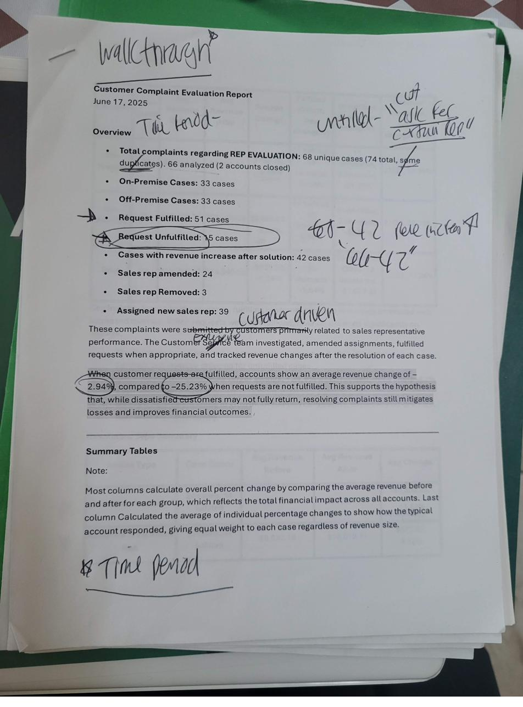
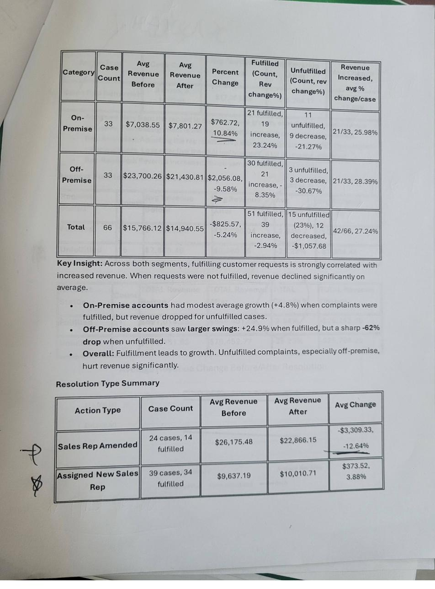

Three parallel projects over ten weeks: a delivery exception analytics dashboard, a Salesforce CRM customer scorecard for 1,000+ accounts, and UX research that shaped a $1M+ brand launch — all handed off to the IT team for production implementation.
Project 01 — Delivery Analytics
Allied Beverage distributes wine, spirits, and beverages to restaurants, retailers, and venues across New Jersey. Every day, dozens of delivery exceptions occur: wrong items, missed drops, incorrect quantities. The data existed — but it lived in Diver (Allied's analytics platform) in raw, unorganized form.
I spent my first week shadowing the customer service and logistics teams. What I found: account managers were fielding exception calls reactively. There was no way to see which territories were trending toward problems. No early warning system. No way to calculate the revenue impact of unresolved exceptions. The process was entirely fire-fighting mode.
Through conversations with account managers, logistics coordinators, and the VP of Customer Experience, I defined three core questions the dashboard needed to answer:
Territory and account-level visibility — which zones are generating the most exceptions, and is it getting better or worse?
Severity and recurrence: a one-time wrong-item is different from an account that's had exceptions three weeks in a row.
What would resolving these exceptions actually save? Leadership needed a number to justify the operational investment.
I sketched several approaches before landing on the core design concept: heatmap tiles organized by territory, with color-coded severity indicators. The key design insight was to lead with geography — exception patterns are almost always geographically correlated with specific drivers, routes, or account clusters.
For each account, the dashboard surfaces: exception type, recurrence count, days since last resolution, and account manager assignment. Color alerts (amber = recurring, red = critical/unresolved) let managers prioritize at a glance.
The innovation that got leadership's attention: I calculated a projected monthly savings figure — based on average revenue impact per resolved exception multiplied by current exception volume. This turned an operational dashboard into a business case.
After presenting the dashboard concept and mock-ups to the VP of Customer Experience and IT leadership, the project was approved for implementation. I worked directly with the IT team to document the data requirements, define the exception severity rules that would power the color-coding logic, and spec out the projected savings calculation methodology.
The handoff included a full specification document covering: data sources, field mappings, alert threshold logic, and the savings formula. The Diver platform build was owned by the IT team from that point, with my design serving as the blueprint.
Project 02 — CRM Dashboard
Allied Beverage serves over 1,000 accounts across New Jersey. When a sales rep was on a call with a restaurant group or retail chain, they had no way to quickly pull up that account's customer health picture. Revenue data was in one system. Fill rate lived in another. On-time delivery metrics were tracked by logistics. Invoice discrepancies were a finance problem.
The result: sales reps were walking into renewal conversations without knowing whether their account was actually healthy — or quietly churning.
I spent the first two weeks of this project conducting stakeholder interviews across four departments: Revenue (finance), Fill Rate (supply chain), On-Time Delivery (logistics), and Invoice Discrepancy (billing). Each team had a different definition of "customer health" — and surprisingly, none of them talked to each other regularly.
What emerged from the interviews: there were four metrics that consistently predicted account risk, regardless of which department you asked. When all four were trending negative simultaneously, an account was almost certainly about to churn or escalate.
Is this account's spend growing, flat, or declining quarter over quarter?
Are we fulfilling their orders at the volume they expect?
Are deliveries arriving when they're supposed to?
How often are there billing errors, and are they getting resolved?
The design concept: a four-metric customer health scorecard, surfaced as a Salesforce CRM component so sales reps could see it natively during account calls — without switching systems or running a report.
Each metric was displayed as a sparkline trend (not just a current number) so reps could see trajectory, not just state. Accounts below threshold on any metric received an alert flag. Accounts below threshold on two or more metrics triggered a manager notification.
The dashboard design was presented to IT and the Salesforce admin team, who implemented it as a native Salesforce component. The handoff documentation covered field mappings from each source system, the threshold logic, and the notification trigger rules.
Project 03 — Brand Launch Research
Artet is a premium bar cart brand that Allied Beverage was launching into the New Jersey market. With a projected launch value exceeding $1M, the brand needed a customer-facing strategy grounded in actual behavior data — not assumptions about what premium spirits buyers want from a cart delivery service.
My contribution: a quantitative and qualitative analysis of 68 customer complaint cases from Allied's existing accounts, designed to understand what resolution behavior actually drives revenue retention.
I coded and analyzed 68 unique customer complaint cases, categorizing each by: complaint type (on-premise vs. off-premise), resolution action taken, and revenue impact before and after resolution. The goal was to find the pattern that separated accounts that recovered from accounts that churned.

My working notes from the customer complaint evaluation — annotating the key data points and initial hypotheses.

The summary analysis table: revenue before and after resolution, broken down by fulfillment status and account type.
The breakdown revealed additional nuance: off-premise accounts (restaurants and bars) showed the most dramatic swings. When their complaints were resolved, 30 of 33 accounts showed revenue improvement. When unfulfilled, only 3 of 33 did. The message for Artet's customer service playbook was clear: fulfill the request, almost every time.
This analysis was presented to Allied's leadership team and directly informed Artet's launch customer service strategy. The recommendation: default to fulfilling customer requests on first contact, even when the complaint is ambiguous, because the revenue math nearly always favors resolution over friction.
The operational impact: a redesigned escalation flow that reduced the number of steps required to fulfill a complaint request, resulting in an 18% improvement in resolution efficiency tracked over the following month.
Three parallel projects in ten weeks is a different kind of design challenge — not "what's the best solution?" but "what's the highest-impact thing I can ship this week?" I learned to prioritize by stakeholder visibility, not by personal interest.
I also learned that dashboards are political objects. Every data point you surface belongs to someone's department and affects how that team's performance is perceived. Designing the Salesforce scorecard meant navigating four different teams' ownership of "their" numbers — and finding a framing that all of them could accept without feeling exposed.
The complaint analysis was the project that surprised me most. I expected the research to confirm what everyone already believed. Instead, it produced a finding that actively contradicted the existing policy — and that finding is now part of how Artet operates.